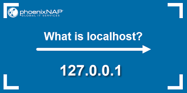

da https://en.wikipedia.org/wiki/Localhost
In computer networking, localhost is a hostname that refers to the current computer used to access it. It is used to access the network services that are running on the host via the loopback network interface. Using the loopback interface bypasses any local network interface hardware.
The local loopback mechanism may be used to run a network service on a host without
requiring a physical network interface, or without making the service accessible from the networks the computer may be connected to. For example, a locally installed website may be accessed from a Web browser by the URL http://localhost to display its home page.
The name localhost normally resolves to the IPv4 loopback address 127.0.0.1, and to the IPv6 loopback address ::1.

IPv4 network standards reserve the entire address block 127.0.0.0/8 (more than 16 million addresses) for loopback purposes.[2] That means any packet sent to any of those addresses is looped back. The address 127.0.0.1 is the standard address for IPv4 loopback traffic; the rest are not supported by all operating systems. However, they can be used to set up multiple server applications on the host, all listening on the same port number. The IPv6 standard assigns only a single address for loopback: ::1. The resolution of the name localhost to one or more IP addresses is normally configured by the following lines in the operating system's hosts file: 127.0.0.1 localhost ::1 localhost

The name may also be resolved by Domain Name System (DNS) servers, but queries for this name should be resolved locally, and should not be forwarded to remote name servers.
In addition to the mapping of localhost to the loopback addresses (127.0.0.1 and ::1)
, localhost may also be mapped to other IPv4 (loopback) addresses and it is also possible to assign other, or additional, names to any loopback address. The mapping of localhost to addresses other than the designated loopback address range in the hosts file or in DNS is not guaranteed to have the desired effect, as applications may map the name internally.
In the Domain Name System, the name localhost is reserved as a top-level domain name, originally set aside to avoid confusion with the hostname used for loopback purposes.[3] IETF standards prohibit domain name registrars from assigning the name localhost.
The name localhost is reserved for loopback purposes by RFC 6761 (Special-Use Domain Names),[4] which achieved the Proposed Standard maturity level in February 2013. The standard sets forth a number of special considerations governing the use of the name in the Domain Name System:
An IPv4 or IPv6 address query for the name localhost must always resolve to the respective loopback address, which is specified in a separate standard.
Applications may resolve the name to a loopback address themselves, or pass it to the local name resolver mechanisms.
When a name resolver receives an address (A or AAAA) query for localhost, it should return the appropriate loopback addresses, and negative responses for any other requested record types. Queries for localhost should not be sent to caching name servers.
To avoid burdening the Domain Name System root servers with traffic, caching name servers should never request name server records for localhost, or forward resolution to authoritative name servers.
DNS registrars are precluded from delegating domain names in the top-level domain localhost.
When authoritative name servers receive queries for 'localhost' in spite of the provisions mentioned resolve them appropriately.
The IPv4 loopback addresses are reserved within the IPv4 address space by the IETF "Special Use IPv4 Addresses" standard (RFC 5735).[5] The reservation can be traced back to the November 1986 "Assigned Numbers" standard (RFC 990).
In contrast, the IETF IP Version 6 Addressing Architecture standard (RFC 4291) reserves the single IPv6 loopback address ::1 within the IPv6 address space. The standard precludes the assignment of that address to any physical interface, as well as its use as the source or destination address in any packet sent to remote hosts. Any such packet that is erroneously transmitted is not supposed to be routed, and should be dropped by all routers or hosts that receive it.
The processing of any
packet sent to a loopback address, is implemented in the link layer of the TCP/IP stack. Such packets are never passed to any network interface controller (NIC) or hardware device driver and must not appear outside of a computing system, or be routed by any router. This permits software testing and local services in the absence of any hardware network interfaces. Looped-back packets are
distinguished fromany other packets traversing the
The releases of the MySQL database differentiate between the use of the hostname localhost and the use of the addresses 127.0.0.1 and ::1.[7] When using localhost as the destination in a client connector interface of an application, the MySQL application programming interface connects to the database using a Unix domain socket, while a TCP connection via the loopback interface requires the direct use of the explicit address.
One notable exception to the use of the 127.0.0.0/8 addresses is their use in Multiprotocol Label Switching (MPLS) traceroute error detection, in which their property of not being routable provides a convenient means to avoid delivery of faulty packets to end users.